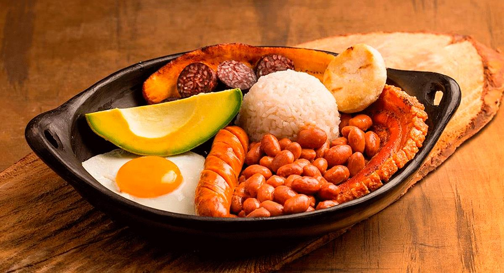

La gastronomía colombiana es una rica fusión de tradiciones indígenas, africanas y europeas, que varía notablemente entre sus regiones. Platos emblemáticos como la bandeja paisa, el ajiaco y el sancocho destacan por su sabor y abundancia, mientras que productos autóctonos como el maíz, la yuca y el plátano son ingredientes esenciales. Además, la diversidad cultural del país se refleja en dulces como las arepas, las obleas y el bocadillo, que deleitan los paladares y celebran la identidad culinaria colombiana.

Un vistaso a la gastronomía
Gastronomía Peruana
La gastronomía colombiana es una rica fusión de tradiciones indígenas, africanas y europeas, que varía notablemente entre sus regiones. Platos emblemáticos como la bandeja paisa, el ajiaco y el sancocho destacan por su sabor y abundancia, mientras que productos autóctonos como el maíz, la yuca y el plátano son ingredientes esenciales. Además, la diversidad cultural del país se refleja en dulces como las arepas, las obleas y el bocadillo, que deleitan los paladares y celebran la identidad culinaria colombiana.
Un vistaso a la gastronomía
Gastronomía Ecuatoriana
La comida típica ecuatoriana es un reflejo de la riqueza cultural y geográfica del país, con sabores que varían entre la costa, la sierra y la Amazonía. Platos emblemáticos como el encebollado, la fanesca y el locro de papa destacan por su tradición y autenticidad. Ingredientes como el plátano, el maíz, la yuca y el pescado fresco son esenciales en su gastronomía, mientras que delicias como los patacones, los ceviches y el cuy asado muestran la diversidad culinaria que hace de Ecuador un destino lleno de sabor y tradición.